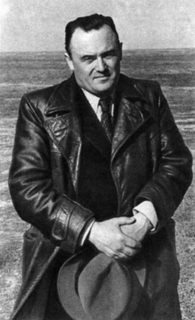

|
CONTENTS Home The Tape Log The Notebooks Tape Leads Links |
The tapes came with notebooks. The handwriting comes from at least a dozen different people. Names were blacked out before the notebooks reached me. I've typed up what I can. THE TRANSLATORMost of what we know about the tapes comes from one woman. She translated the songs into Russian as she could. She is the voice you hear on the Tape 1 recording. The first tape they played sang about the listeners' reactions in real time. All present were deeply disturbed, but none more so than the mysterious translator, whose voice you can hear at the end of the song they heard. The other scientists tried to distance themselves from the project, but she became obsessed. The tapes became her life's work. Her friends said she was looking for something. None of them knew what. Some have theorized she was Anya Lapteva, but this is unlikely. Anya fled the USSR in 1970 and died shortly after and I have notes from the translator dated to much later. People probably just assume this because both were women and that’s just not useful information. The USSR had many faults, but it actually created a formidable pipeline to turn young women into scientists at the height of its power. Her favorite was The First Breezy Day. One of her notes on Venus de Milo went to the Kremlin, and from there to Charles de Gaulle, with a request to increase security at the Louvre. KOROLEV AND THE D.E.R.Sergei Korolev was the chief designer of the Soviet space program. He was most interested in I Can't Believe They Defunded the D.E.R. He had the Translator go over every symbol until she had fifteen versions, each more accurate than the last. He was sure the static at about 03:01 was hiding the secret of faster-than-light travel. In one letter he wrote: "The information hidden behind that infernal static could tell us not just how to travel to the moon but to stars and galaxies as well."
 Sergei Korolev One notebook is nothing but guesses at what D.E.R. stands for. Different handwriting, many people. Then the guesses thin out and the rest of the page is one person's. It gets more frantic. The last page has one answer, in big red letters: DEPARTMENT of EVACUATION RESEARCH Korolev died in January 1966, less than two years after the tapes were found. TRANSCRIPT: "THE FOURTH ONE"From an early discussion of The Cracks are Showing. Names were blacked out as classified.
SCIENTIST 1 [xxxxxxxx]: What's with the fourth one line? What could it be referring to?
SOLDIER [xxxxxxx]: Well that's easy. Earth's the fourth planet from the sun. SCIENTIST 2 [xxxxxxxxxx]: We're the third planet, you idiot. SCIENTIST 1 (after a moment): In this year it is. We don't know when these were recorded. Perhaps one day the sun will pick up an extra planet. SCIENTIST 3 [xxxxxx]: Maybe it lost one before humans evolved. SCIENTIST 1: Exactly. When dealing with the timespan of eternity it would be insanity to assume things would ever stay the same. THE ROGUE AIThe translator seemed to believe two of these songs were more connected than they first appeared, though she cites information I’m not sure how she could have accessed. On Caretaker.exe: "This appears to be an audio file created by the craft's onboard AI. It would be unwise to make assumptions but it is noteworthy that, after the date it was created, the lifespans of the pilots began to decline. It wouldn't be unreasonable to wonder if this computer found the 'Loopholes' it was looking for."
On Pilot 724 Rec 27215: "Apparently, this was recorded within 24 hours of the next pilot being awoken."
How did they know the date it was created? How did they know when the next pilot woke up? ON INDOMITABLENext to her notes on Indomitable, the translator wrote one line: “Puny, defenseless bipeds”
|
Back to the main page
Page last modified: September 25, 1995 · © 1995